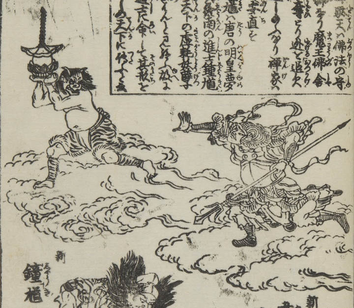

奪い取った仏舎利を持って逃げ走る鬼。上半身は裸で、虎柄の腰巻をつけ、褌を締めている。後ろから韋駄天が追いかけている。
著作者：中村惕齋・下河辺拾水／出典：親書誌：U426_nichibunken_0455：頭書増補訓蒙図彙大成；カシラガキゾウホキンモウズイタイセイ／日付：2025／資源識別子：U426_nichibunken_0455_0016_0001
Copyright (c)2010- International Research Center for Japanese Studies, Kyoto, Japan. All rights reserved.